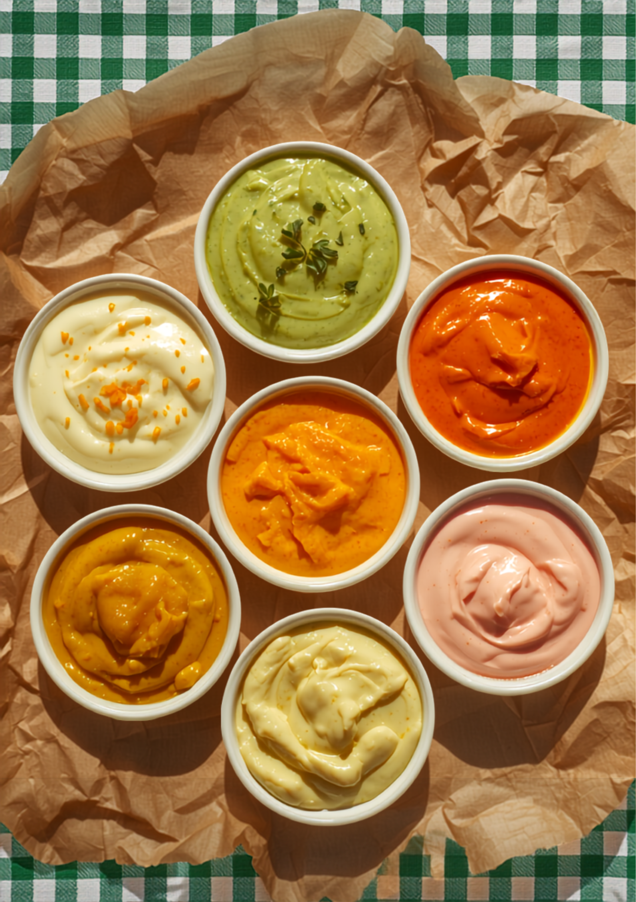

平和交差点のそば、スーパーマキイさんの目の前。よく通る道でも見落としてしまいそうな、こじんまりとした店構えです。ここで家族が、ひとつずつチキン南蛮を仕込んでいます。
「店主の方も気さくで感じがよく、笑顔の素敵な方でした」——そんな声をいただくのが、いちばんの励みです。テイクアウト専門だから、おうちでも、公園でも。あたたかいうちに、どうぞ召し上がってください。
びーーっくりする程おいしい。チキンが柔らかく、肉汁たっぷり。
しっかり甘酢だれに漬け込んでから、たっぷりのタルタル。一切れ一切れが大きく、ボリュームもしっかり。福岡でもトップクラス、と言ってくださる方もいます。
いろんな組み合わせが楽しめる、こだわりのタルタルソース。まろやかな定番から、コクのある宮崎濃いタル、ハーブやスパイスのきいたものまで。
人気No.1｜チキン南蛮 × 宮崎濃いタル「初めて体験する味！」という声も。全10種類の中から、あなたの一皿を見つけてください。フライやお弁当のソースも選べます。

チキン南蛮サンドはとんでもない美味しさ。しかもリーズナブルでボリュームもある。お昼時は大混雑で長く待つことがあるため、時間ずらすのがポイントです。
— Google の口コミより人気No.1の組み合わせ、チキン南蛮と宮崎濃いタルを注文。持って帰る時からいい香り。チキン南蛮はほろっと柔らかく、タルタルは初めて体験する味。ココはリピート確定です。
— Google の口コミよりチキンが柔らかく、肉汁たっぷり！タルタルも数種から選べる、これは絶対食べるべき。店主の方も気さくで感じがよく、笑顔の素敵な方でした。
— Google の口コミより